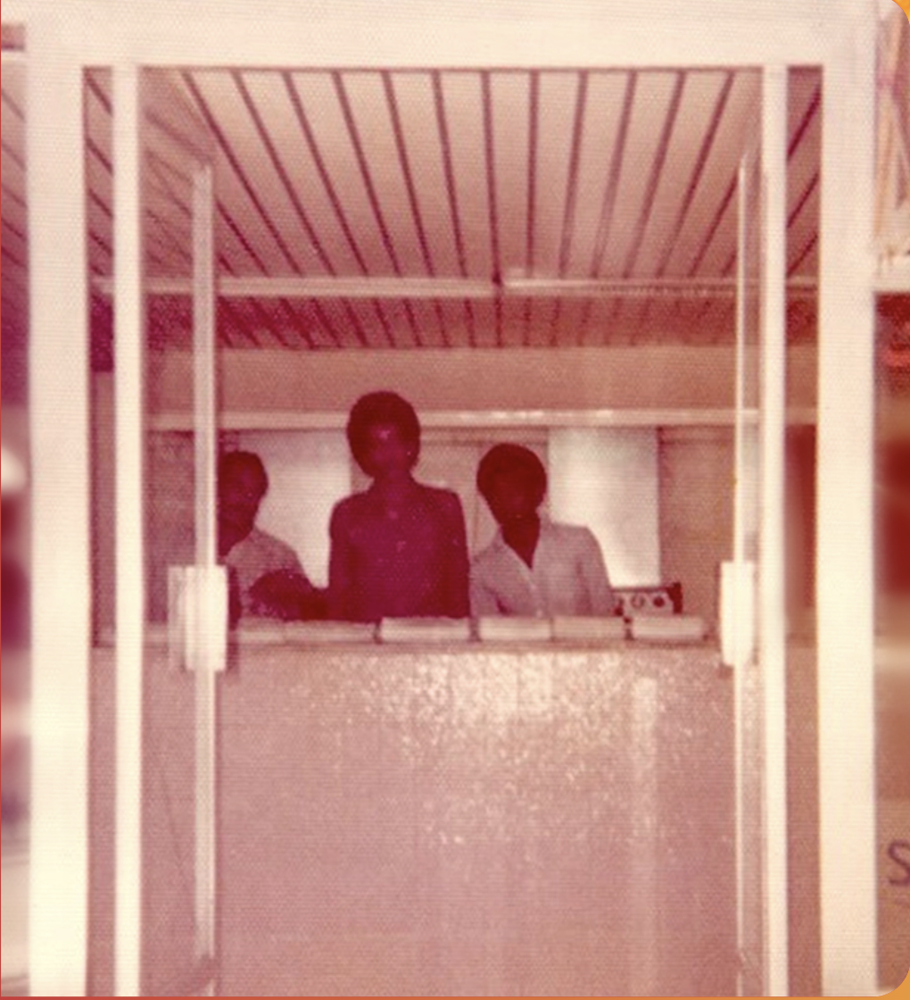

Our Story
The ALBAIK story began in 1974 in the city of Jeddah in the Kingdom of Saudi Arabia when the late Shakour AbuGhazalah saw there was a need for high-quality affordable food, served fast and courteously, in a clean and inviting environment. Putting all his hard-earned savings into this venture, Shakour wrote the first chapter of ALBAIK, being the first in the market to introduce the Broast chicken concept in all of Saudi Arabia.